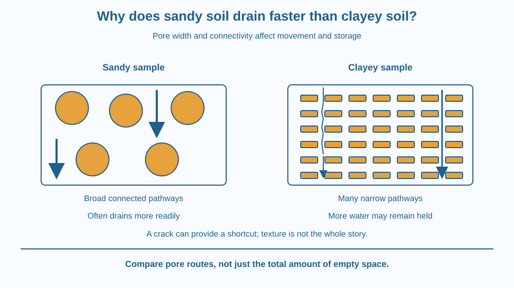

Connect soil particle size with the sizes of spaces between particles. Use pores, drainage and water retention to explain why comparable sandy and clayey samples often behave differently. Recognise why texture alone cannot predict every real field or pot.
After the same shower, water disappears quickly from one garden patch but remains near the surface of another. One patch feels gritty; the other feels smooth and sticky when wet. Both contain spaces between solid particles, so why do they handle water differently?
A tempting answer is that clay has no spaces at all. That answer is wrong. Clay can have many small spaces. The useful question is whether those spaces form wide, connected routes through which water can move easily.
Soil texture describes the proportions of sand, silt and clay-sized mineral particles. Sand particles are relatively large, silt particles are intermediate, and clay particles are very small. Real soil usually contains a mixture, together with organic matter and living organisms.
Spaces between particles are called pores. Some hold air, some hold water, and some contain both at different times. A soil's porosity describes how much of its volume is pore space. Porosity alone does not tell us how readily water moves through the soil.
Comparable sandy samples commonly have relatively large connected pores. Water can move through these pathways fairly readily. After excess water drains away, less may remain stored close to particle surfaces and in narrow spaces.
Clayey samples contain many very small pores. Water moving through narrow, twisting pathways meets greater resistance. Water is also held near mineral surfaces and in small spaces. A clayey sample can therefore retain more water after drainage even though water passes through it slowly.
Do not confuse small particles with small total pore volume. A clayey soil can have substantial pore volume while much of that volume is distributed among very small pores. A pile of large and small passageways with the same total empty space would not necessarily carry water at the same rate.
Infiltration is water entering the soil surface. Percolation is movement through the soil. Drainage is the removal of excess water from a region. These processes are related, but the words answer slightly different questions about where the water is moving.
Texture is only part of the explanation. Compaction can reduce useful pore connections. Aggregates, roots, cracks and animal burrows can create larger pathways. A dry cracked clay field may initially admit water rapidly through cracks. That does not overturn the explanation about water moving through its fine-pored matrix.
Stored water is not all equally available to roots. Some water in very small pores is held tightly. Therefore “holds the most water” does not automatically mean “best for every crop.” Plant growth also depends on air around roots, drainage, nutrients and rooting conditions.
Draw two obstacle courses. In the first, use a few large circles with broad passages between them. In the second, use many small shapes with narrow, winding passages. Trace a water route through each.
The first sketch represents an idealised sandy sample; the second represents part of a clayey sample. Compare the width and connectivity of the routes, not just how much empty paper remains.
Then add a large crack through the second drawing. It creates a shortcut. This last change explains why real soil structure can modify a prediction based only on particle size. A model becomes stronger when you can state the conditions under which it applies.
The SVG shows two equal-sized sample regions. The sandy panel has larger grains and broad spaces. The clayey panel has smaller particles and narrower pathways. Blue arrows show possible routes for moving water.
The caption distinguishes movement through connected pores from water held near surfaces. The number of drawn particles is not a measured sample and does not represent a precise porosity. A small crack symbol reminds you that natural structure can alter drainage.
The diagram compares mechanisms under similar conditions rather than declaring that every sandy field always drains faster than every clay field.

A gardener may water a sandy bed in smaller, more frequent applications because water does not remain stored for as long. A clayey bed may need attention to compaction and drainage so roots are not surrounded by water for too long.
In India, soil varies greatly even within one village. A path repeatedly walked on can drain differently from an adjoining cultivated patch. That difference can come from structure and compaction as well as texture.
Adding an arbitrary amount of sand to clay is not a guaranteed repair. Changing soil structure requires care, and a home comparison does not establish a recipe for managing a real agricultural field.
Do this with an adult. Use two kitchen sieves or strainers lined with matching cloth, two collecting bowls, clean sand and a clean clay-rich garden-soil sample. Avoid dusty handling, unknown contaminated soil and direct contact with wounds. Wash hands afterward.
Packing and starting moisture affect the result. If the water has not emerged within five minutes, record that rather than extending the activity indefinitely. Do not drink the collected water; drainage is not purification.
Imagine two samples with the same texture. One is loosely arranged; the other has been pressed firmly. Why might they drain differently?
Now imagine both are dry, but one contains a deep crack. Predict which route the first water might follow. Use these examples to explain why the label “clay” cannot tell a farmer everything needed about how a particular soil will respond to rain.
What are the spaces between soil particles called?
Answer: A — Pores are the spaces that can contain air and water between soil particles.
Why does comparable sandy soil often drain readily?
Answer: C — Relatively large connected pathways let water move through more readily.
Could a deep crack make water enter a clayey sample quickly at first?
Answer: B — Soil structure can create large pathways even when the surrounding matrix has fine pores.
A school garden has a bed that stays wet after watering. Design a short investigation to distinguish two possibilities: fine texture and strong compaction. Compare nearby samples, describe their starting condition, and propose what observation would support each explanation.
Do not prescribe a treatment from one observation alone. Your final drawing should show both a water pathway and an air-filled space needed by roots after excess water has drained.
A soil can hold considerable water and still drain slowly. The apparent puzzle disappears once you separate the amount of pore space from the size and connectivity of the pores. Storage and movement are different properties. The same distinction matters in sponges, building materials and many engineered porous structures.
Large connected pores often let sandy soil drain readily; many small pores help clayey soil retain water, while structure can change either result.